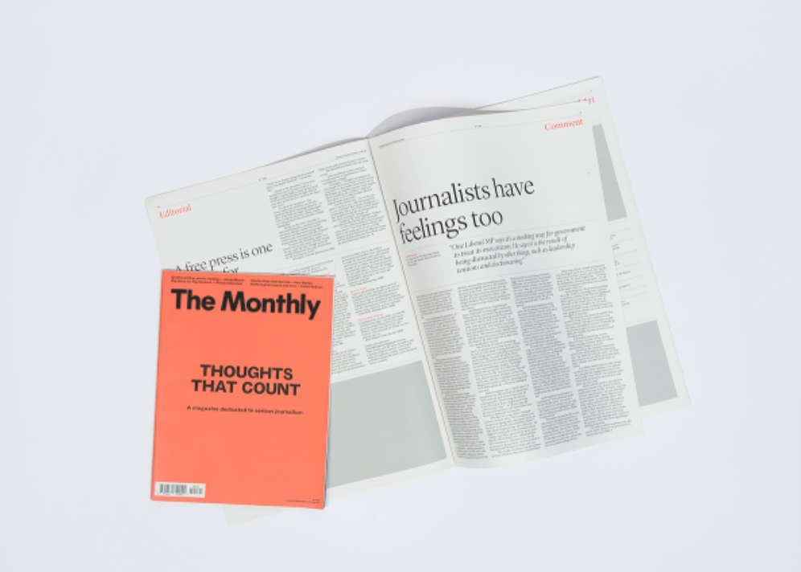

Journalism
Our journalists create in-depth, independent, original public interest reporting, focusing on storytelling and insight.

Our journalists create in-depth, independent, original public interest reporting, focusing on storytelling and insight.
Our journalists create in-depth, independent, original public interest reporting, focusing on storytelling and insight.
Our journalists create in-depth, independent, original public interest reporting, focusing on storytelling and insight.
Our journalists create in-depth, independent, original public interest reporting, focusing on storytelling and insight.
Our journalists create in-depth, independent, original public interest reporting, focusing on storytelling and insight.
Quarterly Essay is the leadi agenda-setting journal of politics and culture in Australia.
Australian Foreign Affairs is the country’s leading foreign affairs journal.
Get in touch with our advertising team.
In collaboration with Alpha60, The Saturday Paper and The Monthly bring you a tote bag.
Give The Saturday Paper or The Monthly as a gift.
Work at the country’s leading independent publisher.
Keep in touch with what is happening at Schwartz Media.
Keep in touch with what is happening at Schwartz Media.